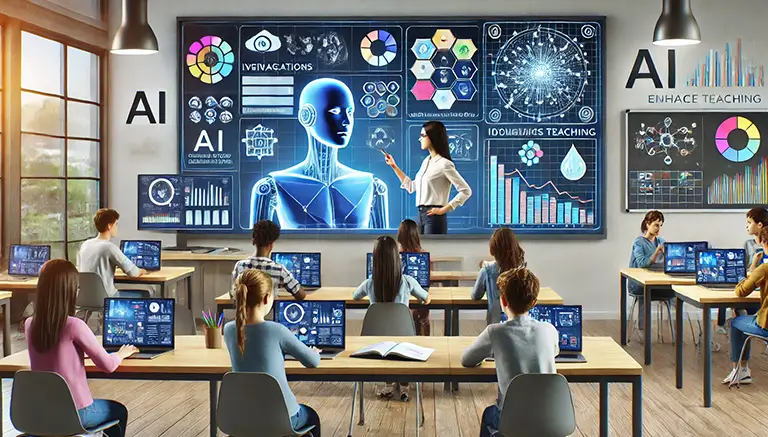
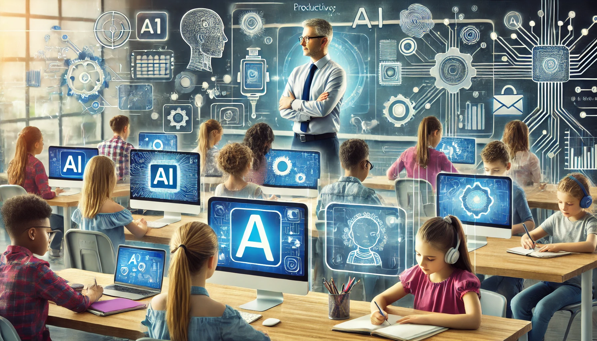

Professores e Inteligência Artificial: Uma Análise Crítica
Vivemos em uma era em que a Inteligência Artificial (IA) está transformando, profundamente todos os aspectos da nossa vida. Na educação, essa revolução é especialmente promissora, mas também levanta importantes questões...

